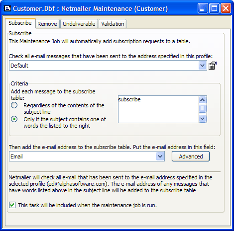

Creating a Netmailer Maintenance Job
Netmailer Professional helps you to accomplish the following emailing tasks:
Process subscribe requests
Process remove requests
Validate email addresses
Identify undeliverable email addresses
Netmailer can monitor a designated email box for subscribe and remove requests, and process the requests as you specify. In addition, Netmailer can validate and check email addresses for incorrect syntax, remove them from the mailing list, and optionally, add them to a list of invalid email addresses.
 Note : You can only
create a maintenance job for a table, not for a set.
Note : You can only
create a maintenance job for a table, not for a set.
Start Alpha Anywhere and open a database.
Right-click on a table or set, and select Addins > Netmailer > Maintain List.
In the Choose Maintenance Job dialog click the New Job button.
In the Netmailer Maintenance Job Genie select a table for storing subscription email addresses from the Add Table list.
Select the field in this table that contains the email addresses from the Email Field list.
Click Next >.
Select the table that will store remove requests from the Remove Table list.
From the Remove Table and Email Field drop-down lists, select a table and field for storing Remove requests.
Select the field in this table that contains the email addresses from the Email Field list.
Click Next >.
Select the table that will store undeliverable email addresses from the Bounce Table list. This table must contain a field named "email".
Click Finish to display the Netmailer Maintenance dialog.

Use the Subscribe tab to specify the following parameters for automatically adding subscription requests to a table.
Select the email address to monitor by selecting a profile from the Check all email messages... list. Optionally, click
 to
create or modify an email profile.
to
create or modify an email profile.Select what Criteria to use for adding email addresses. The options are:
- "Add each message to the subscribe table regardless of the contents of the message line"
- "Add each message to the subscribe table only if the subject contains one of the words listed to the right"
If you selected to look for specific words or phrases, enter them in the text box at right - one entry per line.
Specify the name of the field that will receive the email address in the Then add the email address... list.
Optionally, click Advanced to display the Advanced dialog box.
This dialog specifies what to do with messages on the POP3 server. The choices are:
Download only messages with matching subjects
Download all messages
Optionally, check Delete all messages from the server when finished.
By default, the addition of new subscriptions will occur when the maintenance job runs. Optionally, clear the This will be included... check box if you do not want it included.
Use the Remove tab to specify the following parameters for automatically removing subscription requests from a table.
Select the table to receive remove requests from the This Maintenance Job will... list. Optionally, click
 to navigate to
and select the table. Optionally, click
to navigate to
and select the table. Optionally, click  to view the contents
of the selected table.
to view the contents
of the selected table.Select the email address to monitor by selecting a profile from the Check all email messages... list. Optionally, click
to
create or modify an email profile.Select what Criteria to use for removing email addresses. The options are:
- "Add each message to the remove table regardless of the contents of the subject line"
- "Add each message to the remove table only if the subject contains one of the words listed to the right"
If you selected to look for specific words, enter them in the text box at right - one entry per line.
Specify the name of the field that will receive the email address in the Then add the email address... list.
Optionally, click Advanced to display the Advanced dialog box.
By default, the removal of email addresses will occur when the maintenance job runs. Optionally, clear the This will be included... check box if you do not want it included.
Use the Undeliverable tab to specify the following parameters for handling undeliverable messages.
Select the table where you will store undeliverable email addresses from the This Maintenance Job will... list. Optionally, click
to
navigate to and select the table. Optionally, click to
view the contents of the selected table.Select the email address to monitor by selecting a profile from the Check all email messages... list. Optionally, click
to
create or modify an email profile.Select what criteria to use for identifying undeliverable email addresses by adding or removing phrases from the Subjects and Senders lists.
By default, the removal of undeliverable email addresses will occur when the maintenance job runs. Optionally, clear the This will be included... check box if you do not want it included.
Use the Validation tab to specify the following parameters for validating email addresses in the subscription table.
Under Method select whether to validate emails:
"Interactively" - this will prompt the user for an action each time an invalid address is found
"Batch" - this will automatically process invalid addresses according the specified action.
If you selected "Batch", make a selection from the following options."
"Delete the email address and record from the table.
"Clear the email field, but keep the record."
"Do nothing."
By default, the processing of invalid email addresses will occur when the maintenance job runs. Optionally, clear the This will be included... check box if you do not want it included.
When you finish specifying the Netmailer Maintenance job information, click
 or
or  to save the job.
to save the job.Click
 to run the job.
to run the job.
See Also